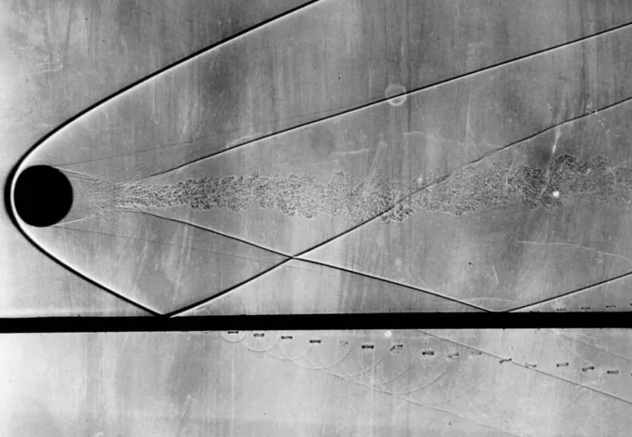
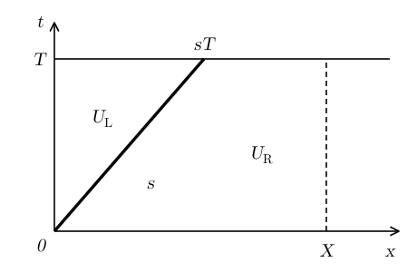
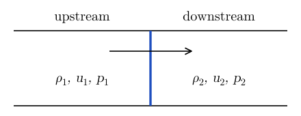
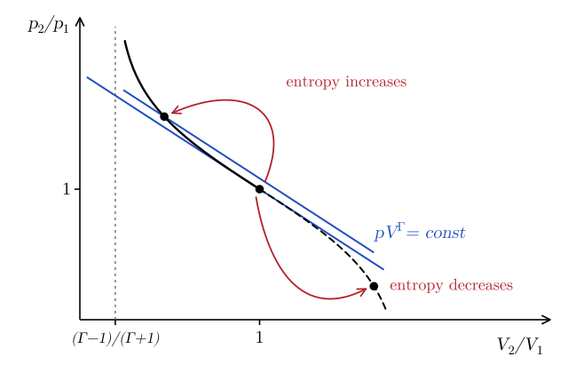
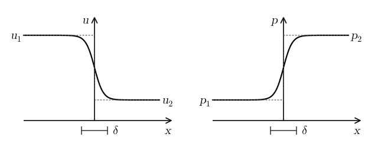
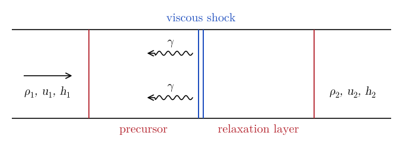
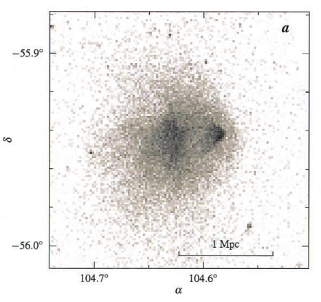

11 Shock Waves
Shock waves are thin regions in which the density, pressure, and velocity of a fluid change abruptly. They form, for example, when sound waves steepen (Chapter 9), in front of supersonic objects (Figure 11.1), and in explosions such as supernovae (Chapter 3). The thickness of a shock is of the order of the mean free path, so in the fluid approximation we can treat shocks as discontinuities.

11.1 Discontinuous solutions
First, we need to learn how to deal with discontinuous solutions. Consider a conservation law in one dimension (see Table 6.1), \[ \partial_t U + \partial_x F (U) = 0 . \tag{11.1}\] Suppose that \(U\) has a discontinuity moving with speed \(s\), so that \(U = U_{\mathrm{L}}\) for \(x < s t\) and \(U = U_{\mathrm{R}}\) for \(x > s t\) (Figure 11.2). The derivatives in Equation 11.1 are not defined at the discontinuity, but we can still integrate the equation over the region \(0 \leq t \leq T\), \(0 \leq x \leq X\): \[ \begin{aligned} & \int_0^T \mathrm{d} t \int_0^X \mathrm{d} x \left[ \partial_t U + \partial_x F (U) \right] = 0 \\ \Longrightarrow \quad & \int_0^X \mathrm{d} x \left[ U \right]_{t = 0}^{t = T} = - \int_0^T \mathrm{d} t \left[ F (U) \right]_{x = 0}^{x = X} . \end{aligned} \tag{11.2}\] At \(t = T\), \(U = U_{\mathrm{L}}\) for \(0 < x < s T\) and \(U = U_{\mathrm{R}}\) for \(s T < x < X\), while at \(t = 0\), \(U = U_{\mathrm{R}}\) everywhere. So \[ \begin{aligned} & U_{\mathrm{L}} s T + U_{\mathrm{R}} (X - s T) - U_{\mathrm{R}} X \\ & \qquad = T \left[ F (U_{\mathrm{L}}) - F (U_{\mathrm{R}}) \right], \end{aligned} \tag{11.3}\] that is \[ \boxed{s (U_{\mathrm{L}} - U_{\mathrm{R}}) = F (U_{\mathrm{L}}) - F (U_{\mathrm{R}}) .} \tag{11.4}\] This is called a jump condition. In the frame of the discontinuity, \(s = 0\), it reads \(F (U_{\mathrm{L}}) = F (U_{\mathrm{R}})\). In other words, the flux is continuous across the discontinuity. This makes sense, because whatever flows into the discontinuity from one side must flow out of the other side.

11.2 Rankine–Hugoniot conditions
The equations of hydrodynamics in one dimension, without external forces and heating or cooling, can be written as (Table 6.1) \[ \begin{gathered} \partial_t \mathbf{U} + \partial_x \mathbf{F} (\mathbf{U}) = 0, \\ \mathbf{U} = \begin{pmatrix} \rho \\ \rho v \\ \rho \varepsilon + \frac{1}{2} \rho v^2 \end{pmatrix}, \qquad \mathbf{F} (\mathbf{U}) = \begin{pmatrix} \rho v \\ \rho v^2 + p \\ \rho h v + \frac{1}{2} \rho v^3 \end{pmatrix}, \end{gathered} \tag{11.5}\] where \(h = \varepsilon + p / \rho\) is the specific enthalpy and \(p = p (\rho, \varepsilon)\) is given by the equation of state. Each component of Equation 11.5 satisfies the jump condition Equation 11.4. It is easiest to write them in the frame of the shock, where \(s = 0\) and the fluid velocity is \(u = v - s\) (Figure 11.3). We denote with \(1\) the upstream state, from which the gas flows into the shock, and with \(2\) the downstream state. We obtain the Rankine–Hugoniot conditions: \[ \begin{aligned} \rho_1 u_1 &= \rho_2 u_2, \\ \rho_1 u_1^2 + p_1 &= \rho_2 u_2^2 + p_2, \\ \rho_1 h_1 u_1 + \tfrac{1}{2} \rho_1 u_1^3 &= \rho_2 h_2 u_2 + \tfrac{1}{2} \rho_2 u_2^3 . \end{aligned} \tag{11.6}\] These are three equations for seven quantities: \(\rho_i\), \(v_i\), \(p_i\) (\(i = 1, 2\)), and \(s\). So, given the upstream state, one more quantity, for example \(p_2\) or \(s\), determines the downstream state.

To manipulate Equation 11.6, we define the specific volume \(V_i = 1 / \rho_i\) (not to be confused with a volume) and the mass flux through the shock \[ j = \rho_1 u_1 = \rho_2 u_2 \Longrightarrow u_i = j V_i . \tag{11.7}\] The momentum condition becomes \(V_1 j^2 + p_1 = V_2 j^2 + p_2\), so that \[ \boxed{j^2 = \frac{p_2 - p_1}{V_1 - V_2} .} \tag{11.8}\] Note that, since \(j^2 > 0\), pressure and density must both increase or both decrease across the shock. Dividing the left-hand side of the energy condition by \(\rho_1 u_1\) and the right-hand side by \(\rho_2 u_2\), which are both equal to \(j\), we obtain \[ h_1 + \frac{1}{2} j^2 V_1^2 = h_2 + \frac{1}{2} j^2 V_2^2 , \tag{11.9}\] and, using Equation 11.8, \[ \boxed{h_2 = h_1 + \frac{1}{2} (p_2 - p_1) (V_1 + V_2) .} \tag{11.10}\] This relation is called the shock adiabat, or Hugoniot adiabat. Note that it only involves the thermodynamic state of the gas on the two sides of the shock.
11.2.1 Polytropic gas
For an ideal gas with a \(\Gamma\)-law equation of state (Equation 2.15) \[ \begin{gathered} h = \varepsilon + p V, \qquad \varepsilon = \frac{p V}{\Gamma - 1} \\ \Longrightarrow \quad h = \frac{\Gamma}{\Gamma - 1} p V = \Gamma \varepsilon, \end{gathered} \tag{11.11}\] so Equation 11.10 becomes \[ \begin{aligned} \Gamma p_2 V_2 &= \Gamma p_1 V_1 \\ &\quad + \frac{1}{2} (\Gamma - 1) (p_2 - p_1) (V_1 + V_2) . \end{aligned} \tag{11.12}\] Solving for the pressure ratio or for the volume ratio, we find \[ \begin{aligned} \frac{p_2}{p_1} &= \frac{(\Gamma + 1) V_1 - (\Gamma - 1) V_2}{(\Gamma + 1) V_2 - (\Gamma - 1) V_1}, \\ \frac{V_2}{V_1} &= \frac{(\Gamma + 1) p_1 + (\Gamma - 1) p_2}{(\Gamma - 1) p_1 + (\Gamma + 1) p_2} . \end{aligned} \tag{11.13}\] We will use these relations in the in-class worksheet (Section 11.6). Note that \(V_2 / V_1\) decreases as \(p_2 / p_1\) increases, and for a strong shock, \(p_2 \gg p_1\), \[ \frac{V_2}{V_1} \to \frac{\Gamma - 1}{\Gamma + 1} . \tag{11.14}\] In other words, a shock can heat the gas without limit, but it can compress it at most by a factor \((\Gamma + 1) / (\Gamma - 1)\).
The shock adiabat is shown in Figure 11.4, together with the adiabats \(p V^{\Gamma} = K = \mathrm{const}\). Recall that \(K\) is a function of the entropy only (Equation 2.24). For compressions, \(V_2 < V_1\), the shock adiabat lies above the adiabat of the upstream gas, so the gas leaves the shock with a larger entropy. For expansions, \(V_2 > V_1\), it lies below, so the entropy would decrease. Since the entropy of the gas crossing the shock cannot decrease, only compression shocks, with \(p_2 > p_1\) and \(\rho_2 > \rho_1\), are physical.

1, the shock adiabat is dashed and lies below the adiabat through (1, 1), so the entropy would be smaller.">So far, we have assumed that the composition of the gas does not change across the shock. However, the gas heated by a shock can be ionized, or its molecules or nuclei can be dissociated. These processes absorb an energy \(\Delta \varepsilon\) per unit mass, which is no longer available to heat the gas. The conservation of mass and momentum is unchanged, while the energy condition, divided by \(j\) as in Equation 11.9, becomes \[ h_1 + \frac{1}{2} u_1^2 = h_2 + \frac{1}{2} u_2^2 + \Delta \varepsilon . \tag{11.15}\] For example, the ionization of atomic hydrogen requires an energy \(\chi = 13.6\,\mathrm{eV} = 2.18 \times 10^{-18}\,\mathrm{J}\) per atom, so \[ \Delta \varepsilon = \frac{\chi}{m_p} \approx 1.3 \times 10^9\,\mathrm{J\,kg^{-1}} . \tag{11.16}\] The dissociation of iron nuclei into free nucleons requires about \(8.8\,\mathrm{MeV}\) per nucleon, so \(\Delta \varepsilon \approx 8.8\,\mathrm{MeV} / m_u \approx 8.5 \times 10^{14}\,\mathrm{J\,kg^{-1}}\). This is the energy lost by the shock of a core-collapse supernova as it moves through the iron core of the star (Chapter 3).
Consider now a strong shock in a cold gas, \(p_1 = 0\) and \(h_1 = 0\). The momentum condition gives \(j^2 = p_2 / (V_1 - V_2)\), and the energy condition becomes \[ \begin{aligned} & \frac{1}{2} j^2 V_1^2 = h_2 + \Delta \varepsilon + \frac{1}{2} j^2 V_2^2 \\ \Longrightarrow \quad & h_2 = \frac{1}{2} p_2 (V_1 + V_2) - \Delta \varepsilon . \end{aligned} \tag{11.17}\] For a polytropic gas, \(h_2 = \Gamma p_2 V_2 / (\Gamma - 1)\), so \[ \boxed{\frac{V_2}{V_1} = \frac{\Gamma - 1}{\Gamma + 1} - \frac{2 (\Gamma - 1)}{\Gamma + 1} \frac{\Delta \varepsilon}{p_2 V_1} .} \tag{11.18}\] In other words, energy losses increase the density jump across the shock, because the energy spent on ionization or dissociation does not contribute to the pressure. Conversely, if the reactions release energy, \(\Delta \varepsilon < 0\), as in a detonation, the compression is reduced.
11.2.2 Mach numbers
From Equation 11.8 and Equation 11.13, \[ \begin{aligned} j^2 &= \frac{p_2 - p_1}{V_1} \frac{1}{1 - V_2 / V_1} \\ &= \frac{p_2 - p_1}{V_1} \frac{(\Gamma - 1) p_1 + (\Gamma + 1) p_2}{2 (p_2 - p_1)} \\ &= \frac{1}{2 V_1} \left[ (\Gamma - 1) p_1 + (\Gamma + 1) p_2 \right] . \end{aligned} \tag{11.19}\] So the velocity upstream of the shock is \[ \begin{aligned} u_1^2 &= V_1^2 j^2 = \frac{V_1}{2} \left[ (\Gamma - 1) p_1 + (\Gamma + 1) p_2 \right] \\ &= \frac{\Gamma p_1 V_1}{2 \Gamma} \left[ \Gamma \left( 1 + \frac{p_2}{p_1} \right) + \left( \frac{p_2}{p_1} - 1 \right) \right], \end{aligned} \tag{11.20}\] where \(c_{s, 1}^2 = \Gamma p_1 V_1\) is the upstream sound speed (Equation 9.15). The upstream Mach number is then \[ \begin{aligned} \mathrm{Ma}_1^2 &= \frac{u_1^2}{c_{s, 1}^2} \\ &= \frac{1}{2 \Gamma} \left[ \Gamma \left( 1 + \frac{p_2}{p_1} \right) + \left( \frac{p_2}{p_1} - 1 \right) \right] \geq 1, \end{aligned} \tag{11.21}\] since \(p_2 \geq p_1\) for a physical shock. Similarly, \[ \begin{aligned} u_2^2 &= V_2^2 j^2 = \frac{V_2}{2} \frac{V_2}{V_1} \left[ (\Gamma - 1) p_1 + (\Gamma + 1) p_2 \right] \\ &= \frac{V_2}{2} \left[ (\Gamma + 1) p_1 + (\Gamma - 1) p_2 \right], \end{aligned} \tag{11.22}\] so that \[ \begin{aligned} \mathrm{Ma}_2^2 &= \frac{u_2^2}{c_{s, 2}^2} \\ &= \frac{1}{2 \Gamma} \left[ \Gamma \left( 1 + \frac{p_1}{p_2} \right) + \left( \frac{p_1}{p_2} - 1 \right) \right] \leq 1 . \end{aligned} \tag{11.23}\] Therefore, the gas enters the shock with a supersonic velocity and leaves it with a subsonic velocity. In other words, shocks separate supersonic from subsonic flows. Note that, in the limit of a weak shock, \(p_2 \to p_1\), both Mach numbers tend to one: a very weak shock is a sound wave.
11.3 Stability of shocks
The Rankine–Hugoniot conditions admit many solutions, but not all of them are realized in nature. A shock must also be stable with respect to small perturbations. Consider a shock in its rest frame and perturb it, so that it is displaced by a small amount \(\eta\), which can vary along the shock (Figure 11.6). The perturbation generates small-amplitude waves on both sides of the shock. In a uniform flow with velocity \(u\), these are sound waves moving with velocities \(u \pm c_s\) (Equation 9.25) and entropy perturbations, which are carried by the flow with velocity \(u\).
The waves moving towards the shock are given, while the waves moving away from it, together with \(\eta\), have to be determined from the three (linearized) jump conditions. Upstream, the waves moving away from the shock have negative velocity. The sound wave with velocity \(u_1 - c_{s, 1} < 0\) exists only if \(u_1 < c_{s, 1}\). Downstream, the waves moving away from the shock have positive velocity. These are the entropy perturbation, with velocity \(u_2\), and the sound wave with velocity \(u_2 + c_{s, 2}\), and, if \(u_2 > c_{s, 2}\), also the sound wave with velocity \(u_2 - c_{s, 2}\).
If \(u_1 > c_{s, 1}\) and \(u_2 < c_{s, 2}\), we have three unknowns: \(\eta\), the entropy perturbation, and one sound wave. These can be determined using the three jump conditions. If \(\eta\) varies along the shock, the flow downstream also carries vorticity perturbations, with velocity \(u_2\). However, there is also one more jump condition, for the velocity tangential to the shock, so the counting does not change. In all other cases, there are more unknowns than equations, so the evolution of a small perturbation is not determined. Such shocks cannot exist (Landau and Lifshitz 1987, sec. 88). So the jump conditions can be solved only if \(u_1 > c_{s, 1}\) and \(u_2 < c_{s, 2}\). This is the same result that we have obtained in Equation 11.21 and Equation 11.23, but here we have not made any assumption on the equation of state.
![A shock in its rest frame, with the gas flowing from left to right. A thin dashed vertical line marks the unperturbed shock; the perturbed shock, a thick wavy line, oscillates around it, and its displacement is marked eta. On the upstream side, on the left, two gray arrows point towards the shock: the sound waves moving at u_1 - c_s,1 and u_1 + c_s,1, which are both positive. On the downstream side, on the right, a gray arrow points towards the shock: the sound wave moving at u_2 - c_s,2, which is negative. Two blue arrows point away from the shock: the entropy and vorticity perturbations, moving at u_2, and the sound wave moving at u_2 + c_s,2.](../figures/shock-waves/evolutionary.svg)
11.4 Structure of shocks
The Rankine–Hugoniot conditions describe the conservation of mass, momentum, and energy across a shock, but they do not tell us anything about its internal structure. Inside a shock the velocity and the temperature change over very short distances, so viscosity and heat conduction cannot be neglected. In the shock frame, the steady one-dimensional equations become \[ \begin{gathered} \frac{\mathrm{d}}{\mathrm{d} x} (\rho u) = 0, \qquad \frac{\mathrm{d}}{\mathrm{d} x} \left( p + \rho u^2 - \sigma \right) = 0, \\ \frac{\mathrm{d}}{\mathrm{d} x} \left[ \rho u \left( h + \frac{u^2}{2} \right) - u \sigma + F_{\mathrm{heat}} \right] = 0, \end{gathered} \tag{11.24}\] where \(\sigma \propto \mathrm{d} u / \mathrm{d} x\) is the viscous stress (Chapter 17) and \(F_{\mathrm{heat}} \propto - \mathrm{d} T / \mathrm{d} x\) is the heat flux (Chapter 6). Far upstream the flow is homogeneous, so the diffusive terms disappear, and we can integrate Equation 11.24 to obtain \[ \begin{aligned} \rho u &= \rho_1 u_1, \\ p + \rho u^2 - \sigma &= p_1 + \rho_1 u_1^2, \\ \rho u \left( h + \frac{u^2}{2} \right) - u \sigma + F_{\mathrm{heat}} &= \rho_1 u_1 \left( h_1 + \frac{u_1^2}{2} \right) . \end{aligned} \tag{11.25}\] The solution of these equations determines the structure of the shock (Figure 11.7). Far downstream the diffusive terms disappear again, and we recover the Rankine–Hugoniot conditions.

The thickness \(\delta\) of a strong shock is of the order of the mean free path of the particles that carry momentum and energy across it (weak shocks are thicker). Shocks in terrestrial applications are mediated by collisions between molecules, and in air \(\delta \sim 100\,\mathrm{nm}\). Shocks in astrophysical applications are often mediated by photons (radiation-mediated shocks), or they are collisionless, that is mediated by interactions between particles and waves in a plasma (Chapter 21). However, for many applications the nature of the shock is not important: the downstream state \(\rho_2\), \(u_2\), \(h_2\) only depends on the upstream state and on the strength of the shock, through the Rankine–Hugoniot conditions. The most comprehensive reference on the physics of shocks is Zel’dovich and Raizer (2002).
11.5 Radiative shocks
So far, we have assumed that the gas does not exchange energy with the radiation. However, the gas behind a strong shock is hot, and it radiates. The structure of the shock then depends on whether the gas is optically thick or optically thin to its own radiation.
11.5.1 Optically thick shocks
If the gas is optically thick, the photons emitted by the hot gas behind the shock diffuse upstream and heat the gas ahead of it, in a region called the radiative precursor (Figure 11.8). Behind the viscous shock, the gas and the radiation relax to equilibrium in a relaxation layer. Since no energy escapes, the Rankine–Hugoniot conditions still connect the states on the two sides of the whole structure, if we include the pressure and the energy of the radiation in \(p\) and \(h\).

In weak, subcritical shocks, the precursor heats the upstream gas to a temperature lower than the final temperature \(T_2\). In strong, supercritical shocks, the precursor heats the upstream gas all the way to \(T_2\). In both cases, the temperature just behind the viscous shock can exceed \(T_2\) (Mihalas and Weibel Mihalas 1984).
11.5.2 Optically thin shocks
If the gas is optically thin, the radiation escapes and carries energy away. The structure of the shock is shown in Figure 11.9. Cold gas moving rapidly (1) crosses the viscous shock and is heated (2), as described by the Rankine–Hugoniot conditions. The hot gas then cools in a radiative relaxation layer, until it reaches thermal equilibrium (3). As the gas cools, it slows down and it is compressed further. The profile of the relaxation layer can be found by solving \[ \begin{gathered} \frac{\mathrm{d}}{\mathrm{d} x} (\rho u) = 0, \qquad \frac{\mathrm{d}}{\mathrm{d} x} \left( \rho u^2 + p \right) = 0, \\ \rho u \frac{\mathrm{d} \varepsilon}{\mathrm{d} x} = - p \frac{\mathrm{d} u}{\mathrm{d} x} - \rho \dot{Q}, \end{gathered} \tag{11.26}\] where \(\dot{Q}\) is the net cooling rate per unit mass. Note that energy is not conserved. Instead, the conditions downstream of the shock can be found from the conservation of mass and momentum, and from the condition of thermal equilibrium: \[ \begin{gathered} \rho_1 u_1 = \rho_3 u_3, \qquad p_1 + \rho_1 u_1^2 = p_3 + \rho_3 u_3^2, \\ \dot{Q} (\rho_3, T_3) = 0 . \end{gathered} \tag{11.27}\]
![Top: the gas flows from left to right. Region 1 is cold gas moving rapidly, with rho_1, p_1, T_1 and u_1. A double line, the viscous shock, separates it from region 2, hot gas moving slowly, with rho_2, p_2, T_2 and u_2. The gas then cools in a radiative relaxation layer, which ends in region 3, cold gas moving very slowly, with rho_3, p_3, T_3 and u_3. Below, two profiles aligned with the regions: the density jumps from rho_1 to rho_2 at the shock and then keeps increasing to rho_3 in the relaxation layer; the temperature jumps from T_1 to T_2 at the shock and then decreases to T_3, close to T_1.](../figures/shock-waves/thin-shock.svg)
11.5.3 Isothermal shocks
For the interstellar medium, a good approximation is often \(T_3 = T_1\): the gas cools back to the temperature set by the balance of heating and cooling. In this case the equation of state is \(p = c_{\mathrm{iso}}^2 \rho\) (Equation 9.16), and Equation 11.27 becomes \[ \begin{aligned} \rho_3 u_3 &= \rho_1 u_1, \\ c_{\mathrm{iso}}^2 \rho_3 + \rho_3 u_3^2 &= c_{\mathrm{iso}}^2 \rho_1 + \rho_1 u_1^2 . \end{aligned} \tag{11.28}\] These can be solved to find \[ \boxed{\frac{\rho_3}{\rho_1} = \left( \frac{u_1}{c_{\mathrm{iso}}} \right)^2 = \mathrm{Ma}_1^2 ,} \tag{11.29}\] where the Mach number is now defined with the isothermal sound speed. Note the difference with adiabatic shocks. The compression is not limited to \((\Gamma + 1) / (\Gamma - 1)\) (Equation 11.14), but grows as the square of the Mach number. This is why radiative shocks can produce very dense layers of gas, for example when interstellar clouds collide (Exercise 11.2).
11.6 In-class worksheet
11.6.1 Shock waves I
Consider a shock wave in an ideal gas with adiabatic index \(\Gamma\). Let \(\rho_1, p_1\), and \(T_1\) be the upstream (unshocked) gas density, pressure, and temperature. Let \(\rho_2, p_2,\) and \(T_2\) be the corresponding downstream (post-shock) quantities.
Show that the ratio of downstream to upstream temperature across the shock is \[ \frac{T_2}{T_1} = \frac{p_2}{p_1} \frac{(\Gamma + 1) p_1 + (\Gamma - 1) p_2}{(\Gamma - 1) p_1 + (\Gamma + 1) p_2} . \tag{11.30}\]
If \(T_2 = 4 T_1\), what are \(p_2\) and \(\rho_2\) as a function of \(\rho_1, p_1,\) and \(T_1\)?
11.6.2 Shock waves II
The Bullet Cluster (1E 0657-56) consists of two colliding clusters of galaxies. The name comes from the characteristic shape of a shock formed by the interaction of the gas from the two clusters, which is visible in X-ray. The image in Figure 11.10 has been obtained with the Chandra X-ray space telescope.

Figure 11.10: Chandra/ACIS 0.5–5 keV image of the Bullet Cluster. From Markevitch et al. (2002); © The American Astronomical Society, reproduced for non-commercial educational use and not covered by the license of these notes. This data can be fitted to infer the following parameters for the upstream and downstream electron density and temperature: \[ \begin{gathered} n_1 = 3.7 \times 10^{- 3}\, \mathrm{cm}^{- 3}, \enspace T_1 = 9.3 \times 10^7 \,\mathrm{K}, \\ n_2 = 9.3 \times 10^{- 3}\, \mathrm{cm}^{- 3}, \enspace T_2 = 2.2 \times 10^8 \,\mathrm{K}. \end{gathered} \tag{11.31}\] Estimate
the Mach number of the shock (defined as the Mach number of the upstream flow);
the relative velocity of approach of the two clusters of galaxies.
11.7 Exercises
Exercise 11.1 (Piston-driven shock) A piston drives a strong shock wave through a cold gas that is initially at rest; similar considerations are used to describe young supernova remnants. The piston moves at speed \(v_p\) and has a mass per unit surface area \(\Sigma_p\). The gas follows a gamma-law equation of state \[ p = (\Gamma - 1) \rho \varepsilon . \tag{11.32}\]
Express the shock speed \(s\), and the downstream density \(\rho_2\) and pressure \(p_2\), in terms of the upstream density \(\rho_1\). Keep \(\Gamma\) general (do not set \(\Gamma = 5/3\)) and do not use the expression for \(s\) given by Kulsrud, which contains a typo.
Calculate the work that the piston does on the gas and estimate when the piston begins to decelerate. Compare the mass of the piston with the mass of the gas that the shock has swept up by that time. For this estimate, take the piston velocity to stay constant until the piston has lost a significant fraction of its kinetic energy.
Adapted from Kulsrud (2005), Problem 4.6.
Exercise 11.2 (Colliding clouds) Two identical clouds, each of radius \(3 \times 10^{16}\, \mathrm{m}\) (about 1 pc) and temperature \(10\,\mathrm{K}\), collide with each other at a relative velocity of \(4\, \mathrm{km} \, \mathrm{s}^{- 1}\).
Estimate the time \(t_{\mathrm{coll}}\) that each cloud needs to run entirely into the shock.
The shocked gas cools at a rate \(\dot{Q} = 10^{- 7}\, \mathrm{W} \, \mathrm{kg}^{- 1}\). Decide whether the shock is approximately adiabatic or isothermal.
Suppose the collision produces an isothermal shock. How thick is the shocked layer, \(x\), at the moment when the whole of each cloud has been shocked?
At later times the layer settles into a structure that can be approximated by a hydrostatic isothermal slab with column density \(10^{- 2}\, \mathrm{g} \, \mathrm{cm}^{- 2} = 0.1\, \mathrm{kg} \, \mathrm{m}^{- 2}\). In this hydrostatic structure, what fraction of the clouds’ mass lies within the thickness \(x\)? Neglect edge effects and variations of the column density across the plane of the slab. (Hint. The density profile of an isothermal slab is given in Clarke and Carswell 2007, sec. 5.2.)
Adapted from Clarke and Carswell (2007), Problem 24.
11.8 Further reading
- Clarke and Carswell (2007), Chapter 7 (supersonic flows).
- Landau and Lifshitz (1987), Sections 84–89 (shock waves).
- Ames Research Staff (1953), for the shock relations and tables of shock properties for air.
- Mihalas and Weibel Mihalas (1984), for radiative shocks.
- Zel’dovich and Raizer (2002), the most comprehensive reference on the physics of shocks.